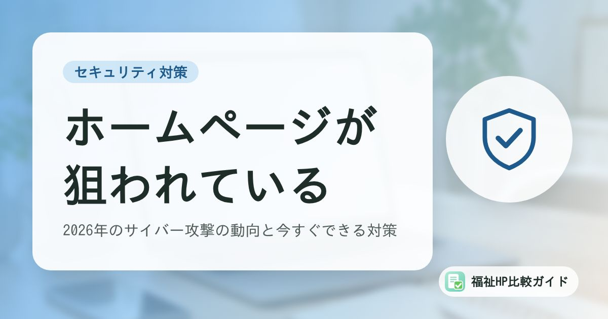

福祉事業所のホームページが狙われている｜2026年のサイバー攻撃の動向と今すぐできる対策

「うちのような小さな事業所が狙われるはずがない」――そう考えている方こそ注意が必要です。サイバー攻撃の多くは、相手を選ばずに弱点のあるサイトやシステムを自動的に探して攻撃します。この記事では、2026年に入ってからの動向と、福祉事業所が今すぐできる対策を整理します。
この記事でわかること
- 2026年上半期のランサムウェア被害は半期として過去最多（警察庁）
- WordPress本体の緊急脆弱性「wp2shell」が実際の攻撃に悪用された
- 福祉事業所のホームページ・システムが狙われやすい理由
- 専門知識がなくても今日からできる7つの対策
2026年、サイバー攻撃はさらに増えている
ランサムウェア被害は半期として過去最多
警察庁が2026年9月に公表した「令和8年上半期におけるサイバー空間をめぐる脅威の情勢等について」によると、2026年上半期に警察へ報告されたランサムウェアの被害は123件で、統計を取り始めた2020年下半期以降、半期として過去最多となりました。
被害の内訳を見ると、中小企業が79件と全体の約3分の2を占めています。大企業だけが狙われているわけではないことがわかります。また、警察庁が観測した脆弱性の探索などの不審なアクセスは、1日・1IPアドレスあたり1万3,687件と、前年同期から約50％増加しています。インターネットに公開されているサーバーやホームページは、常に攻撃者から「弱点がないか」を自動的に調べられている状態だといえます。
IPAの「10大脅威」でも上位は変わらず
IPA（情報処理推進機構）が毎年発表している「情報セキュリティ10大脅威 2026」（組織編）では、1位が「ランサム攻撃による被害」、2位が「サプライチェーンや委託先を狙った攻撃」、3位に「AIの利用をめぐるサイバーリスク」が初めてランクインしました。4位は「システムの脆弱性を悪用した攻撃」です。
| 順位 | 脅威（組織編） |
|---|---|
| 1位 | ランサム攻撃による被害 |
| 2位 | サプライチェーンや委託先を狙った攻撃 |
| 3位 | AIの利用をめぐるサイバーリスク |
| 4位 | システムの脆弱性を悪用した攻撃 |
| 5位 | 機密情報を狙った標的型攻撃 |
「委託先」も狙われる
2位の「サプライチェーンや委託先を狙った攻撃」は、福祉事業所にも関係します。ホームページの制作・保守会社、介護ソフトの提供会社、請求業務の委託先などが攻撃を受け、そこから事業所の情報が漏えいする可能性があるためです。委託先がどのような対策をとっているかを確認することも、事業所の大切な役割です。
WordPress本体に緊急の脆弱性「wp2shell」
2026年7月17日、世界中で広く使われているホームページ作成ソフト「WordPress」の本体に、ログインしなくても外部から任意のプログラムを実行されるおそれがある深刻な脆弱性（通称「wp2shell」）が見つかり、修正版（7.0.2、6.9.5、6.8.6）が公開されました。すでに実際の攻撃も確認されたと報じられ、WordPressの運営側は対象サイトに対して異例の強制自動更新を行いました。
WordPressは福祉事業所のホームページでもよく使われています。自動更新が無効になっていたり、古いバージョンのまま放置されていたりするサイトは、こうした攻撃の格好の標的になります。その後も修正版の公開は続いているため、常に最新版を使っているかを確認しておきましょう。
行政も対策の徹底を呼びかけ
報道などによると、厚生労働省は2026年10月、情報漏えいを伴う不正アクセスが相次いでいることを受け、医療機関や高齢者施設などの所管事業者に対してサイバーセキュリティ対策の徹底を周知し、被害を受けた場合の報告を求めています。福祉の現場でも、サイバー攻撃は「他人事」ではなくなっています。
福祉事業所のホームページが狙われやすい理由
1. 公開後に更新されていないサイトが多い
ホームページを作った後、ソフトウェアやプラグインの更新が行われず、何年も放置されているケースは珍しくありません。担当者の異動や制作会社との契約終了で「誰が管理しているのかわからない」状態になっていることもあります。
2. 個人情報や要配慮個人情報を扱っている
福祉事業所は、利用者の氏名・住所だけでなく、障害の種類や病歴など要配慮個人情報を扱います。問い合わせフォームや見学申込みフォームを通じて、こうした情報がホームページに入力されることもあります。
3. 専任のIT担当者がいない
多くの事業所では、ホームページやパソコンの管理を、本来は支援や事務を担当している職員が兼務しています。セキュリティの情報を日常的に確認する余裕がないのが実情です。
4. 業務システムやメールとつながっている
ホームページのサーバーと同じアカウントでメールを運用していたり、職員が同じパスワードを使い回していたりすると、ひとつの侵入が事業所全体の被害につながるおそれがあります。
ホームページへの主な攻撃の手口
| 手口 | 内容 | 主な被害 |
|---|---|---|
| 脆弱性を突いた改ざん | 古いWordPress本体・プラグイン・テーマの弱点を悪用して侵入 | 不正なページの設置、詐欺サイトへの誘導、ウイルス配布 |
| 管理画面への不正ログイン | 推測しやすいパスワードを自動で試す（総当たり攻撃） | サイトの乗っ取り、情報の書き換え |
| フォームの悪用 | 問い合わせフォームから不正なデータを送る、大量の迷惑送信 | 情報漏えい、迷惑メール送信の踏み台 |
| フィッシング | サーバー会社や取引先を装ったメールでパスワードを盗む | アカウントの乗っ取り |
| 検索結果の汚染 | 改ざんしたサイトに大量の不正ページを作成 | 検索結果に不審な日本語が表示され、信用が低下 |
今日からできる7つの対策
専門知識がなくても取り組める対策から始めましょう。
- 管理者を明確にする：ホームページ、ドメイン、サーバーの契約者とログイン情報を誰が管理しているかを確認し、記録しておく
- ソフトウェアを最新に保つ：WordPress本体・プラグイン・テーマを更新する。自動更新の設定も確認する
- 使っていないプラグイン・テーマを削除する：無効化しただけでは弱点が残る場合がある
- パスワードを強くし、二段階認証を設定する：管理画面、サーバー、メールのパスワードを使い回さない
- バックアップを取る：サーバー外にも保存し、復元できることを確認しておく
- 常時SSL（https）にする：フォームの入力内容を暗号化する
- 保守契約の内容を確認する：制作会社に任せている場合、更新・監視・復旧が契約に含まれているかを確認する
WordPressを使っている場合の具体的な手順は「WordPressセキュリティ対策チェックリスト」で詳しく解説しています。
「改ざんされたかも」と思ったら
ホームページに見覚えのない表示がある、検索結果に不審な文字が出る、サーバー会社から警告が届いたといった場合は、すぐに対応が必要です。初動の手順は「ホームページが改ざんされたときの初動対応」にまとめています。
制作会社選びでもセキュリティを確認しよう
これからホームページを作る、または作り直す場合は、デザインや料金だけでなく、公開後のセキュリティ対策を比較の基準に加えましょう。
- ソフトウェア・プラグインの更新は誰が、どのくらいの頻度で行うか
- バックアップの頻度と保存期間、復元の費用
- 改ざんや不正アクセスが起きた場合の対応と費用
- サーバー・ドメインの契約者は誰になるか（事業所名義にできるか）
当サイトの業種別比較記事では、各社の公開後サポートの内容も整理しています。
まとめ
2026年はランサムウェア被害が半期として過去最多となり、WordPress本体の緊急脆弱性も実際に悪用されました。攻撃者は事業所の規模を問わず、弱点のあるサイトを自動的に探しています。
福祉事業所のホームページは、利用者や家族からの信頼の入口です。管理者の明確化、ソフトウェアの更新、強いパスワードと二段階認証、バックアップという基本を確実に押さえ、制作会社とも役割分担を確認しておきましょう。
よくある質問
ホームページが改ざんされると、どんな被害がありますか？
閲覧した利用者や家族のパソコン・スマートフォンがウイルスに感染する、偽の通販サイトや詐欺サイトへ誘導される、問い合わせフォームの個人情報が盗まれる、検索結果に不審な日本語が表示されるといった被害が考えられます。事業所の信用が大きく損なわれるだけでなく、復旧にも費用と時間がかかります。
制作会社に任せているので、自分たちは何もしなくて大丈夫ですか？
保守契約の内容によります。「ソフトウェアの更新」「バックアップ」「不正アクセスの監視」「改ざん時の復旧」が契約に含まれているかを確認してください。公開後の保守が契約に含まれていない場合、誰も更新しないまま放置されているケースもあります。
被害にあったら、どこに相談すればよいですか？
都道府県警察のサイバー犯罪相談窓口、IPA（情報処理推進機構）の情報セキュリティ安心相談窓口、JPCERT/CC（インシデント報告）などがあります。個人情報が漏えいした、またはそのおそれがある場合は、個人情報保護委員会への報告と本人への通知が必要になることがあります。所管の自治体への連絡も忘れずに行いましょう。
参考資料・出典
- 警察庁「令和8年上半期におけるサイバー空間をめぐる脅威の情勢等について」（PDF）
- @IT「ランサムウェア被害は過去最多 警察庁が明かした2026年上半期の異変」
- IPA「情報セキュリティ10大脅威 2026」
- ITmedia NEWS「WordPressに認証不要でコード実行される緊急の脆弱性 即時更新を呼び掛け」（2026年7月21日）
- GMO Flatt Security Blog「WordPressの深刻度『緊急』脆弱性 wp2shell の概要と対応指針」
- セキュリティ対策Lab「介護・福祉のサイバー攻撃・情報漏洩事例と対策」
- 総務省「国民のためのサイバーセキュリティサイト」
制度・料金・統計は改定される場合があります。最新の内容は各出典の公式情報でご確認ください。